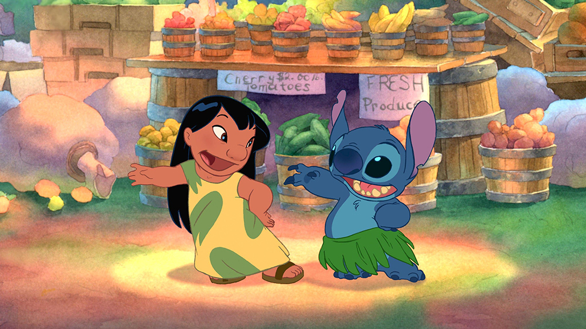

About Lilo
Lilo is a young hawaiian girl who befriends Stitch, a genetically engineered blue alien, and gives him a home.
Lilo and Stitch
What's Lilo like?
- She treats Stitch as family because ohana means family and family sticks together
- She loves to take pictures of tourists on the beach
- She loves to swim and surf with her sister Nani
Lilos Family
Lilo is an orphan and is looked after by her sister but she isn't short of family. Click on the links below to read more abut them: